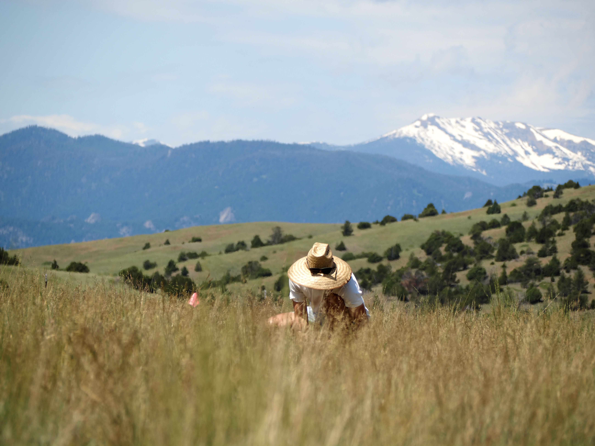
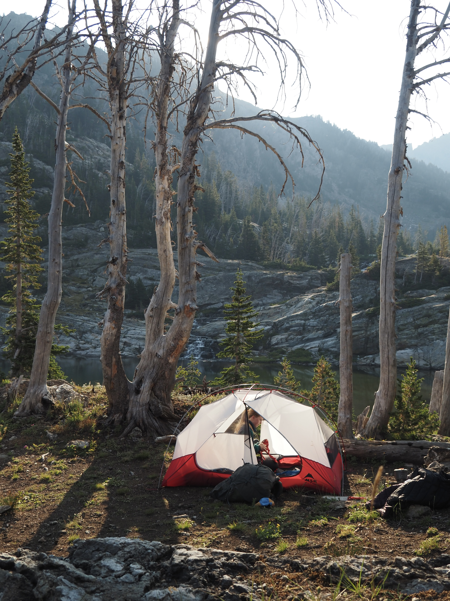
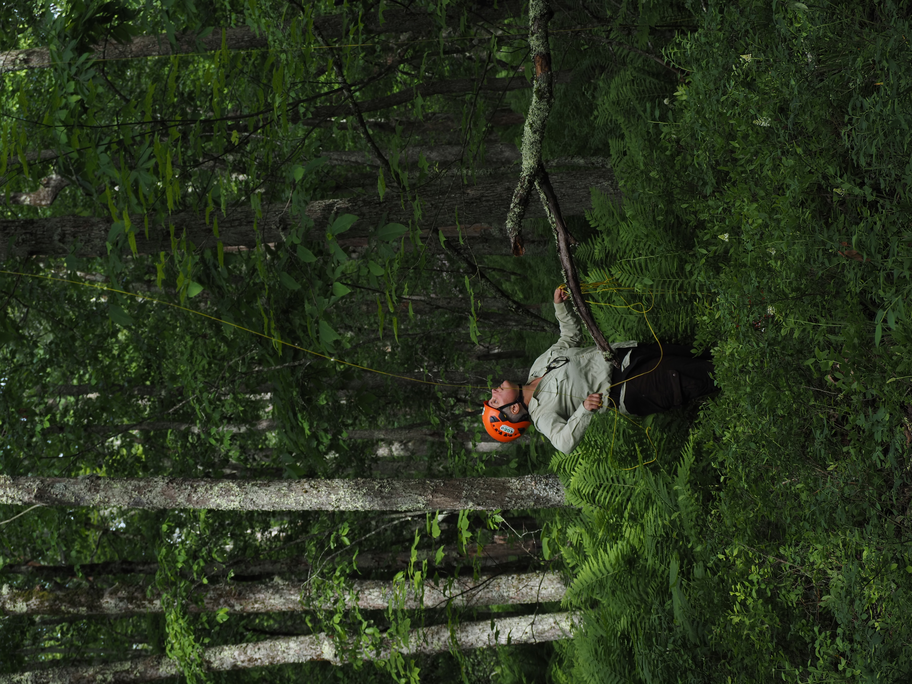
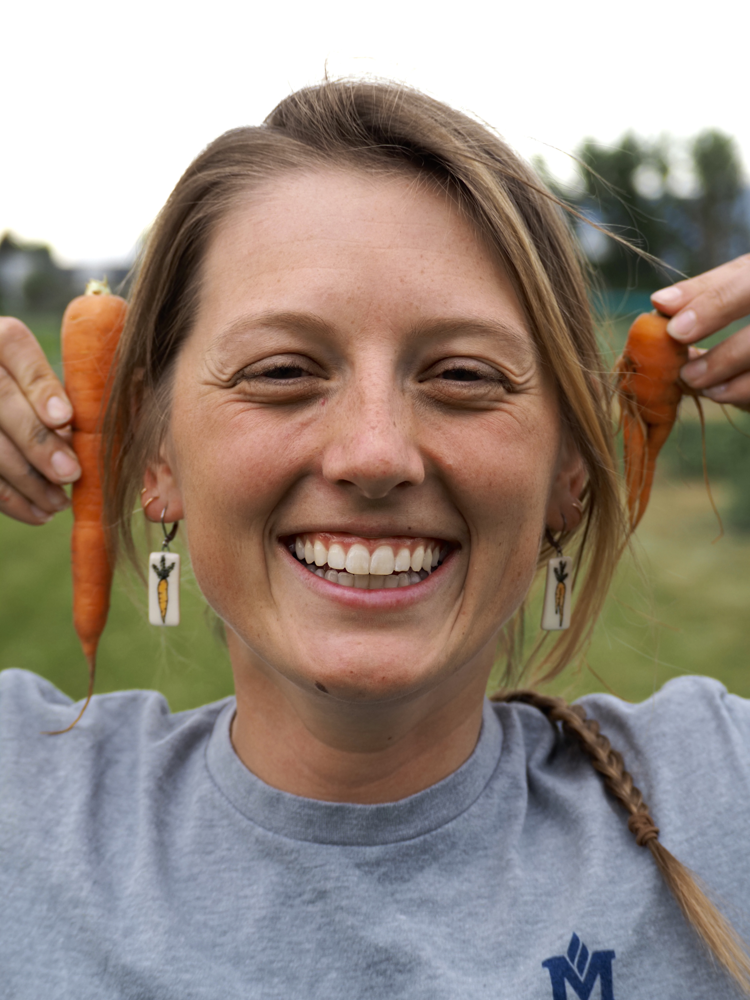
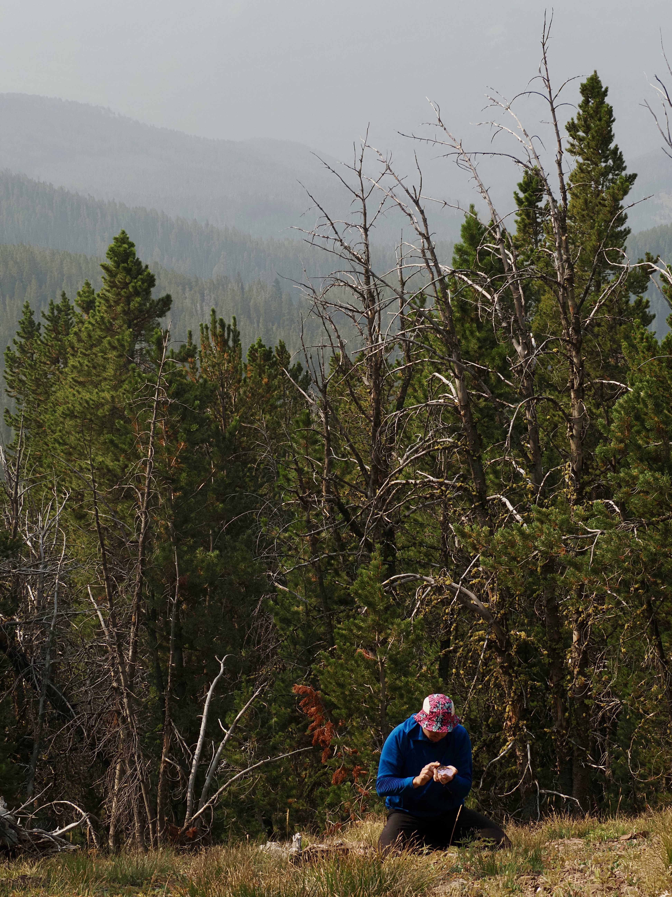
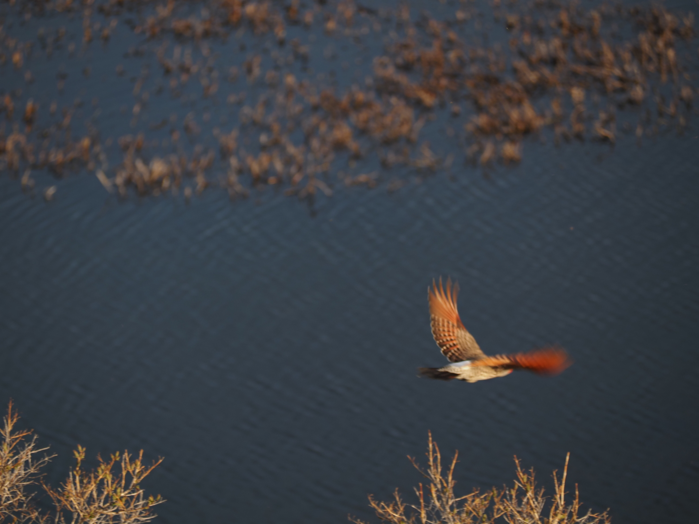
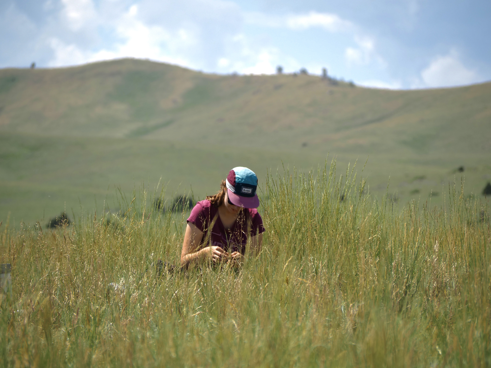
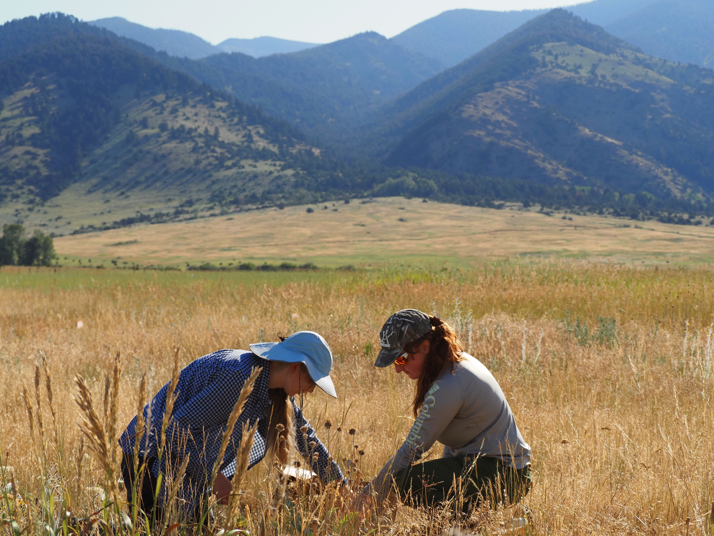
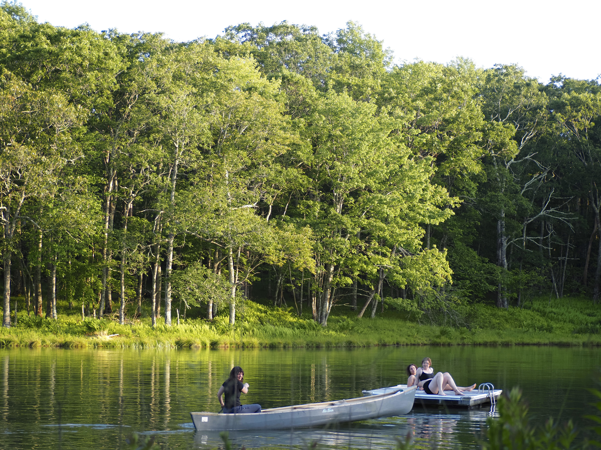

Did you know remote sensing started with pigeons? Long before drones or satellites, the Bavarian Pigeon Corps carried tiny cameras to take aerial photos. Thus, I am a descendant of pigeons!
By day, I use light to study plants (spectroscopy w/ an ecological context). By night, I’m usually behind a camera capturing friends, family, scientists, and sometimes birds (who isn't a birder these days). Basically… I’m just a pigeon with a camera.
Field Notes
"Field Notes" started when I was out in the field with a fellow grad student, along with my camera. I started asking some questions, and put together a little video to get the word out. From there, I have had the chance to interview other amazing early career scientists and make these little, approachable videos. It’s part science, part fun, and all about shining a light on important science! Just a pigeon with a camera, really. (See bavarian pigeon corps for more context)
You can scroll through some of the latest Field Notes videos from instagram here.
Recent Photos & Work
Some other photos taken by a pigeon (me):








